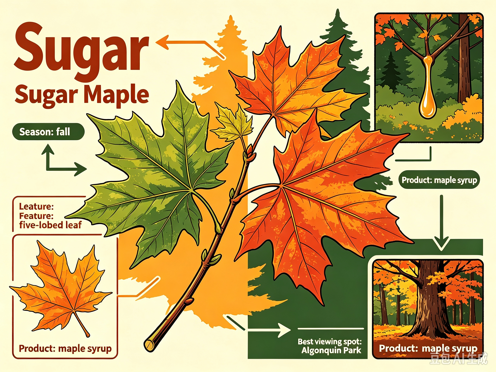
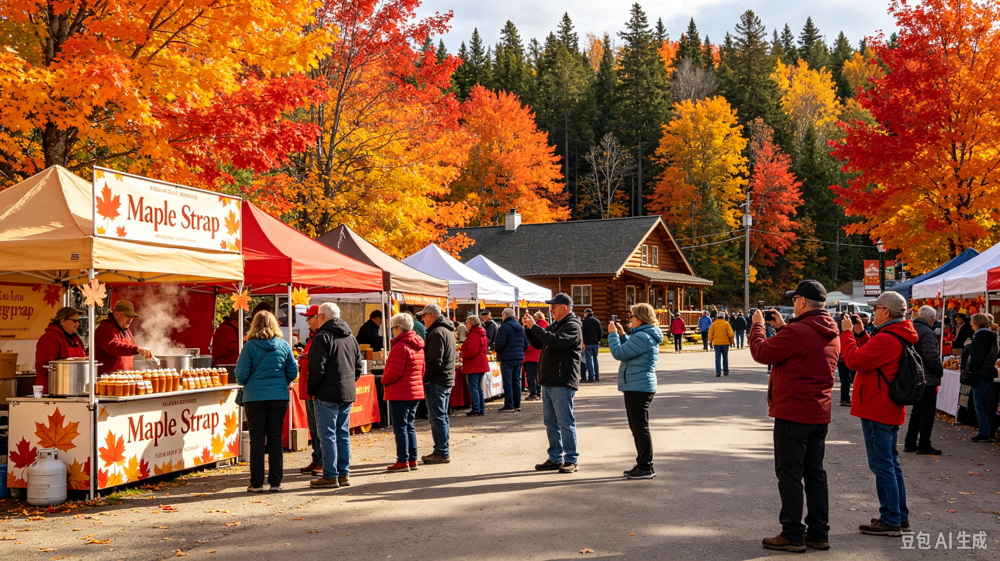

Sugar maple is Canada's iconic deciduous tree and national botanical symbol. In summer, it grows dense green leaves with a unique five-lobed shape, which is printed on Canada's national flag. When autumn arrives, cooling temperatures break down the green chlorophyll, and leaves turn brilliant shades of scarlet red, orange and golden yellow. The tree can produce sweet, clear sap from its trunk, which is boiled down to create authentic Canadian maple syrup. Large maple forests transform the whole landscape into warm fiery colours each fall, attracting leaf-chasing travellers from across the world.

Canada holds vibrant Autumn Maple Festivals every fall. Visitors go on hiking, canoeing and road trips to chase fall foliage. Many small towns organise autumn fairs, serving fresh maple-syrup desserts. Maple-themed handicraft markets are popular among tourists.

Best Time: Late September to Mid-October (peak fall colour season)
Location: Algonquin Provincial Park (West Gate), Whitney, ON K0J 2M0, Canada
How to Get There: From downtown Ottawa, take a regional bus or self-drive north along Highway 60 for roughly 2.5-3 hours to reach Algonquin Park's main west gate.
GPS Coordinates: 45.8372° N, -78.3791° W
Whitney, Ontario, Canada